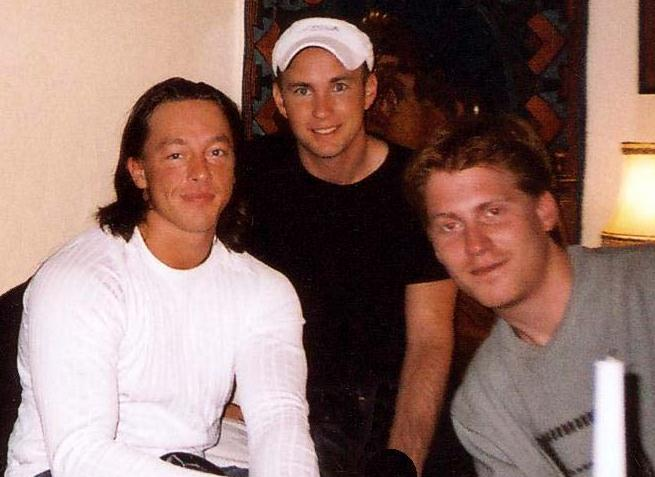

⛏I'm playing Minecraft with my best friend Alex.
僕は最高の友達アレックスとマインクラフトをプレイしている。
[aɪm ˈpleɪɪŋ ˈmaɪnkræft wɪðmaɪ bɛst fɹɛnd ˈæləks]
- with my：with の語末 /ð/ が子音 /m/ に続く。特に変化なし [wɪðmaɪ]「ウィズマイ」
- best friend：特に連結なし
アイム プレイング マインクラフト ウィズマイ ベスト フレンド アレックス

⛏I'm playing Minecraft with my best friend Alex.
僕は最高の友達アレックスとマインクラフトをプレイしている。
⛏Can you friend me on this server?
このサーバーで友達申請してくれない？
⛏We became friends after defeating the Ender Dragon together.
エンダードラゴンを一緒に倒した後、友達になった。
These friends built a huge castle together.
この友達たちが一緒に巨大な城を建てました。
My friends helped me defeat the Wither boss.
友達たちがウィザー・ボスを倒すのを手伝ってくれました。
She friends every new player who joins the server.
彼女はサーバーに参加した新しいプレイヤーと皆友達になります。
He friends anyone who builds amazing structures.
彼は素晴らしい構造物を建てる人と友達になります。
I friended that player after we mined diamonds together.
ダイヤモンドを一緒に採掘した後、そのプレイヤーと友達になりました。
We friended each other on the first day of the server.
サーバーの最初の日に互いに友達になりました。
Having friended many players, I formed a PvP team.
多くのプレイヤーと友達になったので、PvPチームを作りました。
The friended players all wore matching armor.
友達になったプレイヤーたちはみんなお揃いの防具を着ていました。
Friending new players makes the server community stronger.
新しいプレイヤーと友達になることでサーバーコミュニティが強くなります。
By friending experienced players, I learned valuable survival techniques.
経験豊富なプレイヤーと友達になることで、貴重なサバイバルテクニックを学びました。
I'm friending a new player we just met on the server.
サーバーで出会ったばかりの新しいプレイヤーをフレンドに追加しています。
She is friending players while exploring the vast world.
広大な世界を探索しながら、プレイヤーたちをフレンドに追加しています。
I was friending players from another realm when the connection dropped.
別のレルムからのプレイヤーをフレンドに追加していたとき、接続が切れました。
They were friending everyone in the guild chat all evening long.
彼らは夜中ずっと、ギルドチャットの全員をフレンドに追加していました。
I had been friending players all day before the server went offline.
サーバーがオフラインになる前に、ずっと一日中プレイヤーをフレンドに追加していました。
He had been friending people from his clan for several hours when I logged in.
私がログインしたとき、彼は何時間もクランの人たちをフレンドに追加していました。
Steve has friended over fifty players on this server this month.
スティーブはこの月、このサーバーで50人以上のプレイヤーをフレンド申請しました。
I have friended all the builders in my realm to collaborate on this mega project.
私はこのメガプロジェクトで協力するために、自分のレルムの全ビルダーをフレンド申請しました。
Before the server reset, I had friended most of the active players.
サーバーがリセットされる前に、私はほぼすべてのアクティブなプレイヤーをフレンド申請していました。
By the time the new season started, Alex had friended everyone from the previous realm.
新しいシーズンが始まったとき、アレックスは前のレルムのすべてのプレイヤーをフレンド申請していました。
Steve has been friending new players all afternoon and already has fifty new friends.
スティーブは午後中ずっと新しいプレイヤーをフレンド申請していて、もう50人の新しいフレンドがいます。
She has been friending builders on the creative server to collaborate on our mega build.
彼女はクリエイティブサーバーでビルダーをフレンド申請していて、私たちのメガビルドで協力しています。
⛏I want to be friends with the other players in our realm.
自分たちのレルムにいる他のプレイヤーと友達になりたい。
⛏I made friends with a Villager after trading emeralds.
村人とエメラルド取引をした後に友達になった。